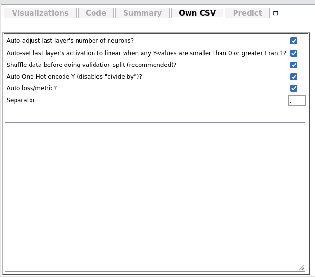
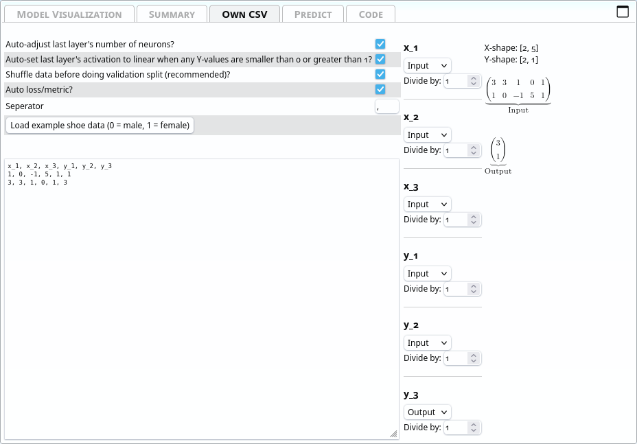
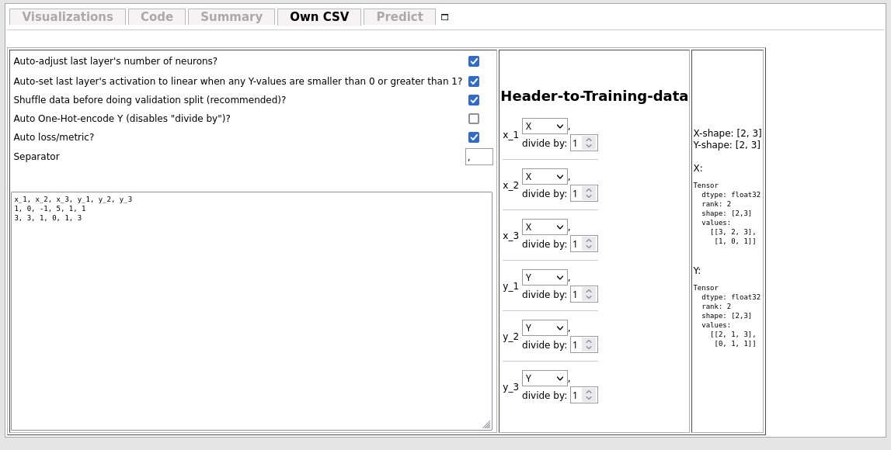
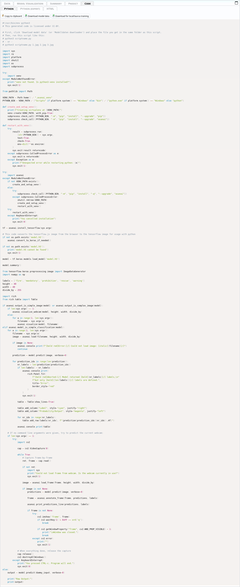

General outline
asanAI offers a simple way of creating sequential neural networks and train them on your own data, from within the browser. It allows you to visualize a lot of different intermediate steps. You can, when done training, also export the trained model to Python and NodeJS.Quickstart
GUI Basics
 The bar at the top is called ribbon. It contains general options, applicable to all layers, the data itself or the ability to start the training.
The bar at the top is called ribbon. It contains general options, applicable to all layers, the data itself or the ability to start the training.
 The left side is the layers panel. It shows the layers of the current neural network in the state they are in currently. Also, it shows the description of what groups of layers do on the right side.
The left side is the layers panel. It shows the layers of the current neural network in the state they are in currently. Also, it shows the description of what groups of layers do on the right side.
Train on images from webcam
The quickest and easiest way to create a neural network is to simply use images from the webcam. Click on the camera icon 📸 in the top-left of the ribbon. When you have as many categories and images as you wish, go to the ribbon and click
When you have as many categories and images as you wish, go to the ribbon and click  .
Remember that the image will, by default, be converted to 10x10 pixels, so make sure that the objects you hold in front of the camera are well-visible and clearly distinguishable.
You will then see graphs like these:
.
Remember that the image will, by default, be converted to 10x10 pixels, so make sure that the objects you hold in front of the camera are well-visible and clearly distinguishable.
You will then see graphs like these:
 For now only the topmost graph is important. The two lines are the Loss and Validation-Loss.
Both show how well the network is performing. A simple (but technically inaccurate) way of thinking of them is the number of errors the network makes while predicting. The lower, the better.
The Validation Loss is based on the Validation Split. This takes a certain percentage out of the training loop and tests the network after each Epoch on data the network has not yet seen.
Both graphs should look similiar. Check how to interpret these graphs here.
When the training is done (or you prematurely cancelled it, which can be done by clicking
For now only the topmost graph is important. The two lines are the Loss and Validation-Loss.
Both show how well the network is performing. A simple (but technically inaccurate) way of thinking of them is the number of errors the network makes while predicting. The lower, the better.
The Validation Loss is based on the Validation Split. This takes a certain percentage out of the training loop and tests the network after each Epoch on data the network has not yet seen.
Both graphs should look similiar. Check how to interpret these graphs here.
When the training is done (or you prematurely cancelled it, which can be done by clicking  in the ribbon), you get automatically redirected to the Predict tab, where your webcam is already enabled and the prediction of what the network thinks is shown life.
in the ribbon), you get automatically redirected to the Predict tab, where your webcam is already enabled and the prediction of what the network thinks is shown life.
 The category which has the highest probability is automatically highlighted in green.
Congratulations! 🎉 You have now trained a neural network. You can now export it to python and do any kinds of logic with it.
The category which has the highest probability is automatically highlighted in green.
Congratulations! 🎉 You have now trained a neural network. You can now export it to python and do any kinds of logic with it.
Train on images from files
Training on images is very similiar to training from webcam images, but instead of the camera icon, click the photo icon (or chose "Own data?" → "Yes, own images/webcam"). Right of the category name, you see an Upload button. Drag files onto there or open the file picker. The rest is the same as with training on webcam images, when done adding images, you may chose to augment them, or straight go to to start training.
Train on CSV
As Neural Networks as just function approximators (see Basic idea of neural networks), you can also approximate custom functions based on numbers. The easiest way to import custom data from functions of the form \( f(x_1, x_2, x_3, \dots, x_n) = [y_1, y_2, y_3, \dots, y_n] \) is to use the CSV importer. For this, choose "Own data?" → "Yes, own CSV". A new tab will appear.  In the large text field, you can enter data in the CSV format:x_1, x_2, x_3, y_1, y_2, y_3 1, 0, -1, 5, 1, 1 3, 3, 1, 0, 1, 3 ... The the header-to-training-data-section you can specify which columns (defined by their title in the very first line) should belong to the Input and which ones should belong to the output.  After specifying this, on the right, a preview of how the tensors will look like like. The input and output shapes are changed automatically according to the data type and the constructed network. There are also some options at the top: Auto-adjust last layer's number of neurons? This sets the number of output neurons depending on the number of values set to "Y". Auto-set last layer's activation to linear when any Y-values are smaller than 0 or greater than 1? This sets the activation function of the last layer to Linear automatically when at least one of the output data values are smaller than 0 or larger than 0. Shuffle data before doing validation split (recommended)? TensorFlow usually takes the last n% of the input data as Validation Split (if enabled). This way, if the data is ordered, you may miss some categories of data in the training data, because it got shifted to the Validation dataset automatically. This can be counteracted by shuffling the data randomly before the validation split is taken out of the dataset. The correlation between an input and an output stays the same after shuffling. Auto One-Hot-encode Y (disables "divide by")? Automatically One-Hot-Encodes if the Y-data has only one column and is a string. Then, it autogenerates labels too. Auto loss/metric? Set loss and metric automatically depending on how the data is structured (for classification problems it takes Categorical Crossentropy and Mean Squared Error for anything else. Separator Which symbol should be used as CSV seperator (usually ","). divide by Which number every value in the tensor should be divided by (by default, 1, and not enabled if auto-one-hot-encoding is enabled.
Basic idea of neural networks
Data
For neural networks, everything is a tensor. Even if you don't know, you have certainly used tensors. Every number, every vector and matrix is a tensor. Tensors are a generalization of matrices. Where matrices have 2 dimensions, $$ \textrm{Second dimension} \stackrel{\mbox{First dimension}}{% \begin{pmatrix} a_{11} & a_{12} & \cdots & a_{1M} \\ a_{21} & a_{22} & \cdots & a_{2M} \\ \vdots & \vdots & \ddots & \vdots \\ a_{N1} & a_{N2} & \cdots & a_{NM} \end{pmatrix}% }. $$ Tensors have an arbitrary number of dimensions. An image, for example, consists of 3 channels, one for red, green and blue, each one being a matrix (or submatrix of the image tensor). If the image is 3x3 pixels, the image as a tensor would look like this: $$ \text{Image} = \begin{pmatrix} \text{Red:} \begin{pmatrix} 255 & 0 & 0 \\ 0 & 128 & 0 \\ 0 & 0 & 64 \end{pmatrix}, \text{Green:} \begin{pmatrix} 255 & 0 & 0 \\ 0 & 128 & 0 \\ 0 & 0 & 64 \end{pmatrix}, \text{Blue:} \begin{pmatrix} 255 & 0 & 0 \\ 0 & 128 & 0 \\ 0 & 0 & 64 \end{pmatrix} \end{pmatrix} $$ The three channels together give us this total image:255
0
0
0
128
0
0
0
64
255
0
0
0
128
0
0
0
64
255
0
0
0
128
0
0
0
64
=
One-Hot-Encoding
One-Hot-Encoding is used to symbolize percentages of values of categories. For example, if you want to differentiate between cat and dog, the output vector could be \( [\text{Percentage Cat}, \text{Percentage Dog}] \), which, in total, sums up to 1 (100%). For more categories, you'd add another entry to that column vector, like \( [\text{Percentage Cat}, \text{Percentage Dog}, \text{Percentage Human} ] \), all of which, again, sum up to 1. This can be achieved with the SoftMax-activation-function.Layers
Layers act as nested functions. Each layer is a function by itself, and with layers, you put them together into one larger function. You can imagine them as such: $$ \text{Result} = \text{Layer 3}\left(\text{Layer 2}\left(\text{Layer 1}\left(\text{Layer 0}\left(\text{input data}\right)\right)\right)\right) $$ This is called a sequential model, since the data flows through it sequentially. There are other types of models, but they cannot be designed with asanAI.What do functions have to do with neural networks?
A mathematical function assigns values from one set to values from another. For example, the function \( \text{nth\_prime}(n) \) assigns natural numbers \( (1, 2, 3, \dots) \) to a subset of natural numbers, prime numbers, \( (2, 3, 5, \dots) \). Since parameters for functions can also be matrices, or even tensors, you can define a computer program as a function that gets some input and produces a specific output, depending solely on the inputs. Imagine a set of images of cats and dogs. These are, as already discussed, tensors. If you want to classify these images, you are actually searching a function such that $$ f\left(\text{Input Image Tensor}\right) = \begin{pmatrix} \text{Probability cat in percent}\\ \text{Probability dog in percent} \end{pmatrix} $$ Writing this function manually is practically impossible. Every picture of every cat or dog is different. Even if it's the same cat, it is different if the picture is taken half a second later. So you cannot simply say "if this pixel has this color and this pixel has this color, and ..., then it is a cat". This is where Neural Networks jump in. Via the layers, we can approximate a function that does that, by connecting different very generalized functions (called layer types) that do specific kinds of tasks. We will cover these layers here. In neural networks, instead of writing the interna of functions by yourself, you give the network a lot of data and what should come out. Mathematically, you tell the network that the function \( f \) should transform the input set \( X \) to the output set \( Y \). It will try to find values for the parameters of the interna of the functions, whose general outline you need to give by specifying the layer types and their options, so that the difference between the values you specify as ground truth and the values the network gives out is minimized as much as possible.Dimensionality Reduction
A common goal of neural networks is dimensionality reduction. Imagine a 64x64 image of either a cat or a dog. The image has 3 channels, so in total it consists of \( 64*64*3 = 12288 \) values. If we only have the categories "Dog" or "Cat", we need to reduce the information from 12288 values to only 2 values. This is a dimensionality reduction, from a tensor of the shape \( [64, 64, 3] \) to a tensor of the shape \( [2] \). This can be done by several ways. For example, convolutions or pooling layers "extract" information from images and reduce the number of values and therefore reduce the dimensionality of the inputted images.Training
The loss function creates a single value from the training data \(X\) and \(Y\) such that the lower the number is, the better the results are. This creates a so-called "loss-landscape", that is a function that represents, for each data point, how well the network currently recognizes it. For each point, this is just a single float. The overall loss is the average loss of all points. For each point, while training, a loss is determined. How exactly this is done is dependent on the optimizer chosen (see Optimizers for more details). After each Batch, the (trainable) weights and biases are adjusted to to better fit the training data and to minimize the loss. The network structure is not altered while training.Batch-Size
While training, you (most probably) cannot hold all the data at once in memory. So the data is splitted into so-called batches. A batch is a subset of the \( X \)-input-tensor and the \( Y \)-output-tensor, such that the inputs are still correctly assigned. Imagine you have 1000 input values that correspond to 1000 output values, and having batch-size 3, then the first batch may be: $$ f\left( \begin{pmatrix} x_0 \\ x_1 \\ x_2 \end{pmatrix} \right) = \begin{pmatrix} y_0 \\ y_1 \\ y_2 \end{pmatrix} $$ The next batch may then be: $$ f\left( \begin{pmatrix} x_3 \\ x_4 \\ x_4 \end{pmatrix} \right) = \begin{pmatrix} y_3 \\ y_4 \\ y_5 \end{pmatrix} $$ and so on, until all values have been seen by the network once. This is then called an epoch.Epochs
When the network, while training, has seen all training data once, this is called an epoch. You usually need many epochs after each other to train a neural network.Shuffling
Because usually not the whole data fits into memory and has to be sharded into smaller chunks (Batches), it is usually recommended to shuffle the data. Imagine you didn't do this in the example network that should learn to classify cats and dogs, and in the first batch the network there are only cats and in the second one only dogs. Then, the network would learn "cat" in the first batch and be punished for what it has learnt previously in the next batch, where there are only dogs. It's recommended that in each batch, if possible, there are data from many different categories, so the network doesn't overfit in each batch. Therefore, the data is shuffled by default, so the likelyhood of one batch containing only one type of image is drastically reduced.How the computer calculates derivatives of very complex function
One possible definition of derivates is this equation: $$ f'(x) = \lim\limits_{h \to 0} \frac{f(x + h) - f(x)}{h} $$ The way a computer can approximate derivates of any arbitrary function, no matter how complex, is to set h to some very small value. Let's say, $$ f(x) = 2x^2 $$ Of course, the derivative is \(4x\) then. But what does the computer say, when you, for example, set h to 0.0001, at the specific point \(x = 10\)? $$ f'(x) = \lim\limits_{h \to 0.0001} \frac{f(x + h) - f(x)}{h} = $$ $$ \frac{f(x + 0.0001) - f(x)}{0.0001} = $$ $$ \frac{f(10 + 0.0001) - f(10)}{0.0001} = $$ $$ \frac{2(10+0.0001)^2 - 2\cdot 10^2}{0.0001} = $$ $$ \frac{2(10+0.0001)^2 - 200}{0.0001} = $$ $$ \frac{0.00400002}{0.0001} = 40.0002 $$ The real answer is 40, the approximated answer is 40.0002; this is, for our example case, good enough, but it could be improved, of course, by chosing a smaller \(h\).Predicting
TODOShapes
Tensors have shapes. The shape describe how many data points are in the tensor, and in what way they are arranged. For example, an Image may have 3 channels (one for each, red, green and blue), and each of those channels may be 10px wide and 20px height. So the total tensor shape may be \([10, 20, 3]\). If you have multiple of these images, lets say five, you may expand the tensor's first implicit index to 5, like this: \([5, 10, 20, 3]\). Then, you'd have 5 images, each 10x20px, with 3 channels each. This, in total, makes \(5 \cdot 10 \cdot 20 \cdot 3 = 3000\) data points.Input Shape
The input shape of a network is the shape of tensors that the network can process. If the incoming tensor has another shape, it may fail, because the network doesn't know what to do with it.Output Shape
The output shape of a network is the shape of the tensor that comes out of the network. Usually, in asanAI, the output shape consists of Dense Layers that have a One-Hot-Encoding (though this may be different for special kinds of networks not covered in this documentation). For example, if you have 5 categories as a one-hot-encoded softmax'ed vector like this: \([0, 0.8, 0.1, 0.05, 0.05]\), the output shape is \([5]\)....Overfitting
TODOA very simple neural network
TODOLayer Types
Basic Layer Types
Dense
Dense Layers are used as a general-purpose-function-approximator. The basic mathematical structure of a Dense Layer is as follows: $$ \text{Dense:} \qquad \underbrace{\begin{pmatrix} y_{0} \end{pmatrix}}_{\mathrm{Output}} = \underbrace{\begin{pmatrix} x_{0} \end{pmatrix}}_{\mathrm{Input}} \times \underbrace{\begin{pmatrix} -1.4404407739639282 \end{pmatrix}}_{\mathrm{Kernel^{1 \times 1}}} + \underbrace{\begin{pmatrix} 0 \end{pmatrix}}_{\mathrm{Bias}} $$ Depending on the Input Shape, the number of elements in both the Kernel and the Bias may change. This, for example, is a Dense Layer with the input shape \( [2] \): $$ \text{Dense:} \qquad \underbrace{\begin{pmatrix} y_{0} \end{pmatrix}}_{\mathrm{Output}} = \underbrace{\begin{pmatrix} x_{0}\\ x_{1} \end{pmatrix}}_{\mathrm{Input}} \times \underbrace{\begin{pmatrix} 0.785955011844635\\ -0.015428715385496616 \end{pmatrix}}_{\mathrm{Kernel^{2 \times 1}}} + \underbrace{\begin{pmatrix} 0.123153419419419 \end{pmatrix}}_{\mathrm{Bias}} $$Flatten
Flatten has no options. It creates a simple vector of any matrix. Example: $$ \textrm{Flatten}\left( \begin{pmatrix} 0 & 1 & 2 \\ 3 & 4 & 5 \\ 6 & 7 & 8 \end{pmatrix}\right) = \left[0 \quad 1 \quad 2 \quad 3 \quad 4 \quad 5 \quad 6 \quad 7 \quad 8 \right] $$ This is used for Dimensionality Reduction, in asanAI especially for the transfer of image tensors to vectors for Dense Layers (see Network Structures).Dropout
The dropout layer sets random values to 0 which a probability given in the Dropout-Rate-option. $$ \underbrace{\textrm{Dropout}}_{\text{Dropout-Rate: 50\%}}\left( \begin{pmatrix} 1 & 2 & 3 & 4 \\ 5 & 6 & 7 & 8 \\ 9 & 10 & 11 & 12 \\ 13 & 14 & 15 & 16 \\ 17 & 18 & 19 & 20 \\ 21 & 22 & 23 & 24 \\ \end{pmatrix} \right) \xrightarrow{\text{Set values randomly to 0 with a 50\% chance}} \begin{pmatrix} 0 & 0 & 3 & 0 \\ 5 & 6 & 7 & 8 \\ 9 & 10 & 0 & 0 \\ 0 & 0 & 15 & 0 \\ 0 & 18 & 19 & 20 \\ 21 & 0 & 0 & 0 \\ \end{pmatrix} $$ This is only active while training. This is used for avoiding overfitting.Reshape
This allows incoming data tensors to be reshaped into another tensor. The number of elements does not change, only their arragement. $$ \begin{pmatrix} 1 & 2 & 3 \\ 4 & 5 & 6 \end{pmatrix} \xrightarrow{\text{Reshape to [3, 2]}} \begin{pmatrix} 1 & 2 \\ 3 & 4 \\ 5 & 6 \end{pmatrix} $$ The product of all input shape elements must be the same as the product of the desired output shape's tensor.Activation Layer Types
See Activation Functions. The Activation Layer Types just do the same as the activation functions, but in a seperate layer.Convolutional Layers
convNd (conv1d, conv2d)
Convolutions slide a matrix, called kernel or filter, with width \(x\) and height \(y\) over the data (by strides steps, and, for each submatrix of the size \(x\) by \(y\), multiplying each submatrix with a so-called kernel or filter of a certain size. This reduces dimensionality and preserves the general activation strength at certain submatrices. Example: Kernel: \( K = \begin{pmatrix} 1 & -1 \\ 0 & 2 \end{pmatrix}\). Data: \( D = \begin{pmatrix} 10 & 8 & 1 & 4 \\ 4 & 2 & 14 & 5 \\ 12 & 20 & 5 & 19 \\ 32 & 128 & 3 & 30 \end{pmatrix} \). The first submatrix (without Padding, because it is not needed here for the Kernel fits perfectly when strides = 1) is \( S_1 = \begin{pmatrix} 10 & 8 \\ 4 & 2 \end{pmatrix} \). \( S_1 \cdot K = \begin{pmatrix} 10 & 8 \\ 4 & 2 \end{pmatrix} \cdot \begin{pmatrix} 1 & -1 \\ 0 & 2 \end{pmatrix} = \begin{pmatrix} 10 & 6 \\ 4 & 0 \end{pmatrix} \). The second submatrix is then \( S_2 = \begin{pmatrix} 1 & 4 \\ 14 & 5 \end{pmatrix} \), which, multiplied by \(K\), is \( \begin{pmatrix} 1 & 7 \\ 14 & -4 \end{pmatrix} \). When slided over the whole image, the result is \( \begin{pmatrix} 10 & 6 & 1 & 7 \\ 4 & 0 & 14 & -4 \\ 12 & 28 & -5 & 43 \\ 32 & 224 & 3 & 57 \end{pmatrix} \). The kernel is being trained to recognize whatever it needs to recognize. What the kernel has learnt can be seen by Visualize Layer for images and image-like tensors. The same principle of a sliding window with matrix multiplications is used in all Convolutional Layers, no matter if 1d or 2d. For 2d, the input tensor must have the shape \( [\text{int}, \text{int}, \text{int}] \) (disregarding the batch size, which would be at first position). A bias is (if enabled) then added to each output value of this graph. For 1d convolutions, the kernel can be written as 2d-matrix. For 2d convolutions, the kernel is actually a 3d-cube (the extra dimension being the channels).conv2dTranspose
A 2D transposed convolutional layer, also known as a deconvolutional layer, is a type of layer used in deep neural networks for upsampling the feature maps. It is the inverse operation of a 2D convolutional layer, and it is used to increase the spatial resolution of the feature maps. A 2D transposed convolutional layer applies a set of filters to the input feature maps, with the goal of increasing their spatial resolution. The filters are applied in a way that is similar to a 2D convolutional layer, but the operation is done in reverse. The input feature maps are upsampled by the transposed convolutional layer by inserting zeros between the elements of the input feature maps, and then applying the filters. The use of 2D transposed convolutional layers allows to increase the spatial resolution of the feature maps, which is useful for tasks such as image segmentation or image generation. They are used in the decoder part of architectures such as U-Net or encoder-decoder architectures, where the goal is to increase the spatial resolution of the feature maps in order to make the predictions more detailed. It is a good choice when the goal is to increase the spatial resolution of the feature maps, for example, in image segmentation or image generation tasks. It is also a good choice when working with encoder-decoder architectures, where the goal is to make predictions more detailed.depthwiseConv2d
A depthwise convolutional layer is a type of 2D convolutional layer used in deep neural networks. It applies a single filter to each input channel independently, rather than applying a set of filters to the entire input feature map. The depthwise convolutional layer applies a single filter to each input channel independently, which means that the number of filters used is equal to the number of input channels. The filters are applied to the input feature map in a way that is similar to a 2D convolutional layer, but each filter is applied only to a single input channel. The use of depthwise convolutional layers allows for a reduction in the number of parameters and computation in the network, while maintaining or even improving the performance. They also allow for a better representation of the spatial correlations within each channel. It is a good choice when there is a need to reduce the number of parameters and computation in the network while maintaining or improving the performance. It's also a good choice when working with images and there's a need to preserve the spatial correlations within each channel. They are commonly used in conjunction with pointwise convolutional layers to form a separable convolutional layer, which is a more efficient way of applying convolutional filters to the input feature maps.separableConv2d
Separable convolutional layers are a type of 2D convolutional layers used in deep neural networks. They are designed to reduce the number of parameters and computation in the network, while maintaining or even improving the performance. A separable convolutional layer consists of two parts: a depthwise convolutional layer and a pointwise convolutional layer. The depthwise convolutional layer applies a single filter to each input channel independently, while the pointwise convolutional layer applies a 1x1 convolution to combine the output of the depthwise convolutional layer. The use of the depthwise convolutional layer and the pointwise convolutional layer in a separable convolutional layer makes it possible to reduce the number of parameters and computation in the network, while maintaining or even improving the performance. The depthwise convolutional layer reduces the number of parameters by applying a single filter to each input channel independently, while the pointwise convolutional layer combines the output of the depthwise convolutional layer with a 1x1 convolution. Separable convolutional layers are often used in the early layers of neural network architectures, especially in the mobile versions of the architectures, where the number of parameters and computation is limited. They can also be used as a replacement for standard 2D convolutional layers in cases where the number of parameters and computation is a concern. It is a good choice when there's a need to reduce the number of parameters and computation in the network while maintaining or improving the performance. It's also a good choice when the model is going to run on mobile devices or other resource-constrained environments.upsampling2d
Makes images and image-like tensors larger by duplicating lines specified by the size factors \( [w, h] \). For example, \( \underbrace{\text{upsampling2d}}_{h = 2,\ w = 4}\left( \begin{pmatrix} 1 & 2 \\ 3 & 4 \end{pmatrix} \right) = \begin{pmatrix} 1 & 1 & 1 & 1 & 2 & 2 & 2 & 2 \\ 1 & 1 & 1 & 1 & 2 & 2 & 2 & 2 \\ 3 & 3 & 3 & 3 & 4 & 4 & 4 & 4 \\ 3 & 3 & 3 & 3 & 4 & 4 & 4 & 4 \end{pmatrix} \). This can be used to upscale images after they have been compressed. E.g. for image segmentation.Pooling layers
averagePooling (averagePooling1d, averagePooling2d)
averagePooling slides a window with pool size \(x\) and \(y\) as width/height over the data (by strides steps, and, for each submatrix of the size \(x\) by \(y\), calculating the average of all the elements in that submatrix. This reduces dimensionality and preserves the general activation strength at certain submatrices. Example: $$ \underbrace{\text{averagePooling}}_{\text{Strides: 1x1, Pool-Size: 2x2}} \left(\begin{pmatrix} \color{red}{10} & \color{red}{8} & \color{blue}{1} & \color{blue}{4} \\ \color{red}{4} & \color{red}{2} & \color{blue}{14} & \color{blue}{5} \\ \color{orange}{12} & \color{orange}{20} & \color{green}{-5} & \color{green}{19} \\ \color{orange}{32} & \color{orange}{128} & \color{green}{3} & \color{green}{30} \end{pmatrix}\right) = \begin{pmatrix} \color{red}{\frac{10 + 8 + 4 + 2}{4}} & \color{blue}{\frac{1 + 4 + 14 + 5}{4}} \\ \color{orange}{\frac{12+20+32+128}{4}} & \color{green}{\frac{-5+19+3+30}{4}} \\ \end{pmatrix} = \begin{pmatrix} \color{red}{6} & \color{blue}{6} \\ \color{orange}{48} & \color{green}{11.75} \\ \end{pmatrix} $$maxPooling (maxPooling1d, maxPooling2d)
maxPooling slides a window with pool size \(x\) and \(y\) as width/height over the data (by strides steps, and, for each submatrix of the size \(x\) by \(y\), extracts the largest number. This reduces dimensionality and preserves the most activated values in certain regions. Example: $$ \underbrace{\text{maxPooling}}_{\text{Strides: 1x1, Pool-Size: 2x2}} \left(\begin{pmatrix} \color{red}{10} & \color{red}{8} & \color{blue}{1} & \color{blue}{4} \\ \color{red}{4} & \color{red}{2} & \color{blue}{14} & \color{blue}{5} \\ \color{orange}{12} & \color{orange}{20} & \color{green}{-5} & \color{green}{19} \\ \color{orange}{32} & \color{orange}{128} & \color{green}{3} & \color{green}{30} \end{pmatrix}\right) = \begin{pmatrix} \color{red}{10} & \color{blue}{14} \\ \color{orange}{128} & \color{green}{30} \\ \end{pmatrix} $$Dropout and noise layers
alphaDropout
AlphaDropout is a variation of dropout, a regularization technique for reducing overfitting in neural networks. In standard dropout, a random subset of neurons are “dropped out” during each training step by setting their activations to zero. AlphaDropout, on the other hand, sets the activations to a random noise sampled from a zero-mean normal distribution with standard deviation of $\alpha$ (alpha is a hyperparameter). This way, AlphaDropout allows the model to still learn the mean of the activations while also preventing overfitting and forcing the model to be less sensitive to the specific weights of the neurons. In other words, AlphaDropout regularizes the network by adding noise to the activations, which promotes the network to learn more robust feature representations. AlphaDropout can be useful for certain types of datasets, such as time-series data, where the activations have temporal dependencies. This layer is only active during training.gaussianDropout
Drops out with a gaussian distribution of a specified dropout rate (in the example, 0.2). This is used for simulating real-world-data, which is usually noisy (for example, when coming in over a webcam). This layer is only active during training.gaussianNoise
Adds gaussian noise to images. You can specify the standard deviation (in the case shown above = 1) of how noisy the image should be. This is used for simulating real-world-data, which is usually noisy (for example, when coming in over a webcam). This layer is only active during training.Debug Layers
Debug Layer
This layer does not do anything to the data. It just prints them out to console.log.Layer Options
Trainable
If enabled, the network's weights and biases (if enabled, see Use Bias) are changed while training. If not, they stay the same.Use Bias
If enabled, the network has a bias. In Dense Networks, a layer with Use Bias enabled, has this mathematical representation: $$ \underbrace{\begin{pmatrix} y_{0} \end{pmatrix}}_{\mathrm{Output}} = \mathrm{\underbrace{LeakyReLU}_{\mathrm{Activation}}}\left(\underbrace{\begin{pmatrix} x_{0}\\ x_{1} \end{pmatrix}}_{\mathrm{Input}} \times \underbrace{\begin{pmatrix} -1.124836802482605\\ 0.01841479167342186 \end{pmatrix}}_{\mathrm{Kernel^{2 \times 1}}} + \underbrace{\begin{pmatrix} 0.123153419419419 \end{pmatrix}}_{\mathrm{Bias}} \right) $$ A Layer without Use Bias enabled would look like this: $$ \underbrace{\begin{pmatrix} y_{0} \end{pmatrix}}_{\mathrm{Output}} = \mathrm{\underbrace{LeakyReLU}_{\mathrm{Activation}}}\left(\underbrace{\begin{pmatrix} x_{0}\\ x_{1} \end{pmatrix}}_{\mathrm{Input}} \times \underbrace{\begin{pmatrix} 0.24012170732021332\\ 1.188180685043335 \end{pmatrix}}_{\mathrm{Kernel^{2 \times 1}}} \right) $$ The bias allows the function's output to be shifted in any axis.Units
TODOStandard-Deviation
TODOStrides
TODORegularizer
Regularization is a technique used to prevent overfitting in machine learning models by adding a penalty term to the loss function. The goal is to prevent the model from fitting the noise in the data, and to encourage the model to have small weights. The choice of regularization method depends on the specific problem and the dataset. L1 regularization can be preferred in case of sparse data, where only a few features are informative. L2 regularization can be preferred when the problem is not sparse and when you want to keep all the features. L1-L2 regularization can be used when you have both sparse and non-sparse data. In the context of machine learning, "sparse" generally refers to a dataset or input where a large proportion of the values are zero or near zero. For example, a sparse matrix is a matrix in which most of the elements are zero. A sparse dataset is a dataset where most of the features have little or no variation and thus, little or no informative value. In the context of regularization, L1 regularization is often preferred when working with sparse data because it tends to push the weights of less important features towards zero, effectively setting them to zero. This results in feature selection, where only the most important features are used for the final model, making it simpler and more interpretable. In contrast, L2 regularization tends to shrink the weights of all features towards zero, but it doesn't push the weights to exactly zero. This means that it doesn't perform feature selection, and all features are used in the final model. In general, L1 regularization is more suitable for sparse data, where only a few features are informative, and L2 regularization is more suitable when the problem is not sparse.l1
Also known as Lasso regularization, it adds a penalty term to the loss function proportional to the absolute value of the weights. The L1 regularization term is defined as $\lambda\sum_{i=1}^{n}|w_i|$, where $\lambda$ is the regularization strength and $w_i$ are the weights of the model. The L1 regularization tends to push the weights towards zero and thus it can also be used to perform feature selection.l2
L2 Regularization: Also known as Ridge regularization, it adds a penalty term to the loss function proportional to the square of the weights. The L2 regularization term is defined as $\lambda\sum_{i=1}^{n}w_i^2$, where $\lambda$ is the regularization strength and $w_i$ are the weights of the model. The L2 regularization tends to shrink the weights towards zero, but unlike L1 regularization, it doesn't push the weights to exactly zero.l1l2
The combination of L1 and L2 regularization is also known as Elastic-Net regularization. The regularization term is defined as $\lambda(\alpha\sum_{i=1}^{n}|w_i| + (1-\alpha)\sum_{i=1}^{n}w_i^2)$, where $\lambda$ is the regularization strength, $w_i$ are the weights of the model, and $\alpha$ is a parameter that controls the balance between L1 and L2 regularization. This regularization method combines the feature selection property of L1 regularization with the shrinkage property of L2 regularization.Initializers
Initializer set in which way values, mostly the Bias and Kernel, should be initialized as. An initializer is a function used to initialize the weights of a neural network. It is called when the model is first created and its purpose is to set the initial values of the weights. The choice of initializer can have a significant impact on the performance and convergence of the model. In general, He et al. and LeCun normal/uniform initializers tend to work well for deep networks, while Glorot/Xavier normal/uniform initializers tend to work well for shallow networks. It also depends on the activation function used in the layer.glorotUniform
GlorotUniform: This initializer samples the weights from a uniform distribution within the range [-x, x], where x is calculated as sqrt(6 / (fan_in + fan_out)), where fan_in is the number of input units in the weight tensor and fan_out is the number of output units in the weight tensor. It is a good choice for feed-forward neural networks with rectified linear units (ReLU) activation functions.constant
Sets all of the kernel or bias values to a given constant. For example, a Dense-layer with 8 neurons, Kernel Initializer set to constant and it's value to 42 without bias would look like this: $$ h_{\text{Shape: }[8]} = \underbrace{\begin{pmatrix} x_{0}\\ x_{1} \end{pmatrix}}_{\mathrm{Input}} \times \underbrace{\begin{pmatrix} 42 & 42 & 42 & 42 & 42 & 42 & 42 & 42\\ 42 & 42 & 42 & 42 & 42 & 42 & 42 & 42 \end{pmatrix}}_{\mathrm{Kernel^{2 \times 8}}} $$glorotNormal
This initializer samples the weights from a normal distribution with mean 0 and standard deviation x, where x is calculated as sqrt(2 / (fan_in + fan_out)), where fan_in is the number of input units in the weight tensor and fan_out is the number of output units in the weight tensor. It is similar to GlorotUniform and a good choice for feed-forward neural networks with rectified linear units (ReLU) activation functions.heNormal
Draws from a normal distribution with mean 0 and a standard deviation of sqrt(2 / fan_in) where fan_in is the number of input units in the weight tensor.heUniform
heUniform: Draws from a uniform distribution within [-sqrt(6 / fan_in), sqrt(6 / fan_in)] where fan_in is the number of input units in the weight tensor.leCunNormal
leCunNormal: Draws from a normal distribution with mean 0 and a standard deviation of sqrt(1 / fan_in) where fan_in is the number of input units in the weight tensor.leCunUniform
leCunUniform: Draws from a uniform distribution within [-sqrt(3 / fan_in), sqrt(3 / fan_in)] where fan_in is the number of input units in the weight tensor.ones
Initializes the weight or bias with \( 1 \). For example, imagine kernel initializer ones and bias initializer randomUniform, a possible layer function could be: $$ \left(\underbrace{\begin{pmatrix} x_{0}\\ x_{1} \end{pmatrix}}_{\mathrm{Input}} \times \underbrace{\begin{pmatrix} 1 & 1 & 1 & 1 & 1 & 1 & 1 & 1\\ 1 & 1 & 1 & 1 & 1 & 1 & 1 & 1 \end{pmatrix}}_{\mathrm{Kernel^{2 \times 8}}} + \underbrace{\begin{pmatrix} 0.7754069566726685 \\ 0.49466845393180847 \\ 0.7826976180076599 \\ 0.25087693333625793 \\ 0.794059157371521 \\ 0.5701638460159302 \\ 0.04553954675793648 \\ 0.20112565159797668 \end{pmatrix}}_{\mathrm{Bias}} \right) $$randomNormal
randomNormal: Draws from a normal distribution with a mean of 0 and a standard deviation of 0.05.randomUniform
randomUniform: Draws from a uniform distribution within [-0.05, 0.05].truncatedNormal
truncatedNormal: Draws from a normal distribution with a mean of 0, but discards any values that are more than 2 standard deviations from the mean.varianceScaling
varianceScaling: Draws from a distribution with a mean of 0 and a standard deviation of sqrt(2 / (fan_in + fan_out)) where fan_in is the number of input units in the weight tensor and fan_out is the number of output units in the weight tensor.zeros
Initializes the weight or bias with \( 0 \). For example, imagine kernel initializer ones and bias initializer randomUniform, a possible layer function could be: $$ \left(\underbrace{\begin{pmatrix} x_{0}\\ x_{1} \end{pmatrix}}_{\mathrm{Input}} \times \underbrace{\begin{pmatrix} 0 & 0 & 0 & 0 & 0 & 0 & 0 & 0\\ 0 & 0 & 0 & 0 & 0 & 0 & 0 & 0 \end{pmatrix}}_{\mathrm{Kernel^{2 \times 8}}} + \underbrace{\begin{pmatrix} 0.7754069566726685 \\ 0.49466845393180847 \\ 0.7826976180076599 \\ 0.25087693333625793 \\ 0.794059157371521 \\ 0.5701638460159302 \\ 0.04553954675793648 \\ 0.20112565159797668 \end{pmatrix}}_{\mathrm{Bias}} \right) $$Kernel Initializer
The Kernel Initializer sets the initial values of the kernel to one of the initializers.Bias Initializer
The Bias Initializer sets the initial values of the bias to one of the initializers.Kernel Regularizer
TODOBias Regularizer
TODODropout Shape
TODOTarget Shape
TODOValidation Split
TODOValidation Loss
Loss
TODO General variables used here: $$ \text{Ground truth output value} := y_i $$ $$ \text{Ground truth input value} := \hat{x}_i $$ $$ \text{Output value of the network} := \hat{y}_i $$ $$ \text{Number of elements in total} := n $$meanSquaredError
This loss is used when you want to minimize a neural network, where the difference between 2 possible output values has a meaningful interpretation. That means, if you care about the exact number coming out of the network, instead of just using it as a category id for example. $$ \mathrm{MSE} = \frac{1}{n} \sum_{i=1}^n \left(y_i - \hat{y}_i\right)^2 $$ Example-Calculation: $$ MSE \left(\underbrace{\begin{pmatrix} 0.1 \\ -0.2 \\ 1 \end{pmatrix}}_{\text{Ground-Truth}}, \underbrace{\begin{pmatrix} 0 \\ 0.2 \\ -1 \end{pmatrix}}_{\text{Predicted Value}} \right) = \frac{ \left( 0.1 - 0 \right)^2 + \left( -0.2 - 0.2 \right)^2 + \left( 1 - -1 \right)^2 }{3} = 4.17 $$binaryCrossentropy
$$ \text{Binary Crossentropy:} -\frac{1}{n} \sum_{i=1}^n y_i \cdot \log\left(\hat{y}_i\right) + 1\left(-y_i\right) \cdot \log\left(1 - \hat{y}_i\right) $$categoricalCrossentropy
$$ \text{Categorical Crossentropy:} -\sum_{i=1}^n y_i \log\left(\hat{y}_i\right) $$ Imagine you want to classify images as one of 5 categories. The input tensors are the images themselves, the output tensor is a vector by the shape of \( [5] \). Each entry in that output vector is a percentage of how much the network thinks the predicted image is of that one category. For example, imagine the output tensor is \( \begin{pmatrix} 0.03 \\ 0.9 \\ 0.05 \\ 0.01 \\ 0.01 \end{pmatrix} \). This means the network is 3% certain the image belongs to category 1, 90% for category 2, 5% for category 3 and 1% for category 4 and 5 respectively. Imagine the was really category 2. Then, the network already does a prettys good job, even though the results are not perfectly at 1, they are close enough to be meaningful. We don't want to punish the network for that then, of course. But imagine, category 3 was the correct one. Then, it was very bad, although it is the second best category. For this, categoricalCrossentropy is useful. Let us calculate the categorical crossentropy value for each of those options. In the first one, the ground-truth output is \( \begin{pmatrix} 0 \\ 1 \\ 0 \\ 0 \\ 0 \\ \end{pmatrix} \). The categorical crossentropy would be: $$ -\sum_{i=1}^n y_i \log\left(\hat{y}_i\right) = $$ $$ -\left( \underbrace{(0 * \log(0.03))}_\text{First entry} + \underbrace{(1 * \log(0.9))}_\text{Second entry} + \underbrace{(0 * \log(0.05))}_\text{Third entry} + \underbrace{(0 * \log(0.01))}_\text{Fourth entry} + \underbrace{(0 * \log(0.01))}_\text{Fifth entry} \right) = $$ $$ -\left( 0 + -0.10536051565782630123 + 0 + 0 + 0 \right) = 0.10536051565782630123 $$ This is not a perfect loss, but it indicates the results is quite OK. Let's try the other case, where the ground truth is \( \begin{pmatrix} 0 \\ 0 \\ 1 \\ 0 \\ 0 \\ \end{pmatrix} \). The categorical crossentropy would be: $$ -\left( \underbrace{(0 * \log(0.03))}_\text{First entry} + \underbrace{(0 * \log(0.9))}_\text{Second entry} + \underbrace{(1 * \log(0.05))}_\text{Third entry} + \underbrace{(0 * \log(0.01))}_\text{Fourth entry} + \underbrace{(0 * \log(0.01))}_\text{Fifth entry} \right) = $$ $$ -\left( 0 + 0 + -2.99573227355399099344 + 0 + 0 \right) = 2.99573227355399099344 $$ Which is quite a high loss. Usually, it is recommeded to use categoricalCrossentropy together with a SoftMax in the last layer, because values of \(\log(x)\) are \(\gt 0\) and therefore the categoricalCrossentropy may become negative for bad \(\gt 1\) values, indicating to the optimizer that they are good, when in reality, they probably aren't. categoricalCrossentropy rewards losses that are close enough to be useful with a low loss result, and punishes values that are far off by the desired results. This is due to the structure of the \( \log \) function, which starts steeply and gets more and more flat the higher the number gets:categoricalHinge
Categorical hinge loss is a loss function used in multi-class classification tasks, specifically for training models using the hinge loss. It is a variation of the hinge loss that is used for multi-class classification problems where the goal is to separate the classes with a linear boundary. The hinge loss is defined as the maximum of 0 and the difference between the predicted class score and the true class score, plus a margin. In the case of the categorical hinge loss, the predicted class score is the score of the predicted class, and the true class score is the score of the correct class. The categorical hinge loss is calculated as: loss = max(0, 1 - y_true * y_pred) where y_true is the true class label and y_pred is the predicted class score. The function will return 0 if y_true* y_pred >=1, else it will return 1- y_true* y_pred. It forces the model to have a margin of at least 1 between the correct class and the other classes. It is used in cases when multi-class classification is required and training with Hinge Loss is preferred.hinge
Hinge loss is a loss function used in classification tasks, specifically for training models using a linear boundary. It is commonly used in support vector machines (SVMs) and other maximum-margin classifiers. The hinge loss is defined as the maximum of 0 and the difference between the predicted class score and the true class score, plus a margin. The margin is a hyperparameter that controls how far the predicted class score must be from the true class score in order for the loss to be non-zero. The hinge loss is calculated as: loss = max(0, 1 - y_true * y_pred) where y_true is the true class label (-1 or 1) and y_pred is the predicted class score. The function will return 0 if y_true* y_pred >=1, else it will return 1- y_true* y_pred. It forces the model to have a margin of at least 1 between the correct class and the other class. In binary classification, it is used to train a linear classifier that separates the two classes by a margin. It's a commonly used loss function for training linear models in a large margin setting, as it encourages the model to separate the classes as much as possible, which leads to a more robust classifier.meanAbsoluteError
$$ \mathrm{MAE} = \frac{1}{n} \sum_{i=1}^n \left|y_i - \hat{y}_i\right| $$ The meanAbsoluteError calculcates the absolute difference for each set of values from the ground truth and the predicted value, and averages over them. If the ground truth is \( \begin{pmatrix} 0 \\ 10 \\ -100 \end{pmatrix} \) and the predicted value is \( \begin{pmatrix} 3 \\ 9 \\ 10 \end{pmatrix} \). The single absolute differences are \( \left[3, 1, 110\right] \), and the mean is \( \frac{3+1+110}{3} = 38 \). This function should be used if you care about the output tensor's value to be as close to the ground truth as possible and if the difference between 2 values has a meaningful interpretation.meanAbsolutePercentageError
$$ \text{MAPE} = \frac{1}{n} \sum_{t=1}^{n} \left|\frac{\hat{y} - y}{\hat{y}}\right| $$ The mean absolute percentage error is used to measure forecasting errors. Example: $$ y = [1, 0, 0.5, 2] \qquad \text{(Ground Truth)} $$ $$ \hat{y} = [0.5, 1, 0.4, 2] \qquad \text{(Predicted)}$$ $$ n = 4 $$ $$ \text{MAPE}\left(y, \hat{y}\right) = \frac{1}{4} \cdot \left( \left(\frac{0.5-1}{0.5}\right) + \left(\frac{1-0}{1}\right) + \left(\frac{0.4-0.5}{0.5}\right) + \left(\frac{2-2}{2}\right) \right) = $$ $$ \frac{1}{4} \cdot \left( \left(\frac{-0.5}{0.5}\right) + \left(\frac{1}{1}\right) + \left(\frac{-0.1}{0.5}\right) + \left(\frac{0}{2}\right) \right) = $$ $$ \frac{1}{4} \cdot \left( -1 + 1 + -0.2 + 0 \right) = $$ $$ \frac{1}{4} \cdot \left( -0.2 \right) = -0.05 $$meanSquaredLogarithmicError
Mean squared logarithmic error (MSLE) is a loss function used in regression problems. It is a variation of the mean squared error (MSE) loss function, which is commonly used for regression problems. The MSLE loss is calculated as: $MSLE = \frac{1}{n} \sum_{i=1}^{n} (log(1+y_i) - log(1+\hat{y_i}))^2$ Where: n is the number of samples $y_i$ is the true value of the i-th sample $\hat{y_i}$ is the predicted value of the i-th sample This loss function calculates the mean squared error between the logarithm of the true values and the logarithm of the predicted values. MSLE is less sensitive to the large errors than MSE, as the logarithm function dampens the effect of large errors. This loss function is used when the target variable is skewed and has some large values, it is often used in regression problems that involve exponential growth, such as predicting stock prices, population growth, or the spread of a disease. It can also be used when there are outliers in the data, as it is less sensitive to large errors than mean squared error. $$ \text{Mean Squared Logarithmic Error:} \frac{1}{n} \sum_{i=0}^n \left(\log\left(y_i + 1\right)- \log\left(\hat{y}_i + 1\right)\right)^2 $$poisson
Poisson loss is a loss function used in regression problems when the target variable follows a Poisson distribution. It is a measure of the difference between the predicted values and the true values, where the difference is calculated based on the probability of the true values given the predicted values. The Poisson loss is calculated as: $L = \frac{1}{n} \sum_{i=1}^{n} (y_i log(\hat{y_i})-\hat{y_i})$ Where: n is the number of samples $y_i$ is the true value of the i-th sample $\hat{y_i}$ is the predicted value of the i-th sample This loss function is used when the target variable follows a Poisson distribution, a discrete probability distribution that expresses the probability of a given number of events occurring in a fixed interval of time or space, if these events occur with a known average rate and independently of the time since the last event. Poisson loss is a good choice when the target variable is a count, such as the number of visitors to a website, the number of clicks on an ad, or the number of phone calls received. It's a good choice when the target variable is a count, the model is expected to predict the mean of the Poisson distribution, and the target variable is positive. It's also a good choice when the model is expected to predict a rate, such as time between events. Keep in mind that Poisson loss assumes that the target variable follows a Poisson distribution and can be sensitive to outliers.sparseCategoricalCrossentropy
Sparse categorical cross-entropy is a loss function used in multi-class classification tasks. It is used when the target labels are integers rather than one-hot encoded vectors. The sparse categorical cross-entropy loss is calculated as: $L = -\frac{1}{N}\sum_{i=1}^{N} log(\frac{e^{f_{y_i}}}{\sum_{c=1}^{C}e^{f_c}})$ Where: N is the number of samples in the batch C is the number of classes $f_{y_i}$ is the predicted logit for the true class of the i-th sample $f_c$ is the predicted logit for the c-th class $y_i$ is the true class label for the i-th sample This formula calculates the average cross-entropy loss over the batch of samples. The cross-entropy loss for each sample is calculated by taking the log of the predicted probability for the true class, and dividing by the sum of the predicted probabilities for all classes. The resulting loss value is negative, so it is multiplied by -1 to obtain the final loss. The sparse categorical cross-entropy loss function expects the target labels to be integers, and uses these integers to index into the predicted logits to obtain the predicted class scores. It is used when the classification task has multiple classes, and the target labels are integers rather than one-hot encoded vectors. It's a common loss function when training models for multi-class classification problems.squaredHinge
Squared hinge loss is a loss function used in classification tasks, specifically for training models using a linear boundary. It is a variation of the hinge loss that is used to penalize the model more heavily when the predicted class score is further from the true class score. The hinge loss is defined as the maximum of 0 and the difference between the predicted class score and the true class score, plus a margin. The squared hinge loss is calculated as the square of this difference: $L = max(0, 1 - y_i * y_j)^2$ Where: $y_i$ is the true class label (-1 or 1) $y_j$ is the predicted class score This function will return 0 if $y_i * y_j >=1$, else it will return $(1- y_i * y_j)^2$. It forces the model to have a margin of at least 1 between the correct class and the other class. This loss function is similar to hinge loss, but it punishes the model more heavily when the predicted class score is further from the true class score, which can lead to a more robust classifier. However, it is also computationally more expensive than hinge loss, as it requires squaring the difference. This loss function is often used for SVM-based models, and other linear classifiers with maximum-margin approach.kullbackLeiblerDivergence
Kullback-Leibler divergence (KLD) also known as relative entropy, is a measure of how much one probability distribution diverges from a second expected probability distribution. In the context of machine learning, it is often used as a loss function for training models in generative tasks, such as variational autoencoders and generative adversarial networks. The Kullback-Leibler divergence between two probability distributions p and q is defined as: $D_{KL}(p||q) = \sum_{i=1}^{n} p(i) log(\frac{p(i)}{q(i)})$ Where: n is the number of samples p(i) and q(i) are the probability of i-th sample under the two distributions This formula calculates the divergence between the two distributions by summing over all possible outcomes, the probability of that outcome under the first distribution multiplied by the logarithm of the ratio of the probability of that outcome under the first distribution to the probability of that outcome under the second distribution. This loss function measures the dissimilarity between two probability distributions, it is often used as a loss function in generative models, to measure how well the model can generate samples that match the true distribution of the data. It is a measure of how much information is lost when approximating a true distribution with a model distribution.logcosh
The log-cosh loss is a smooth approximation of the absolute value loss, which is commonly used in regression problems. It is defined as: $L = log(cosh(y_i - y_j))$ Where: $y_i$ is the true value $y_j$ is the predicted value This function calculates the logarithm of the hyperbolic cosine of the difference between the true and predicted values. The log-cosh loss is a smooth approximation of the absolute value loss, which is less sensitive to outliers than the mean absolute error (MAE) loss. This loss function is often used for regression problems, it is less sensitive to outliers than the mean squared error (MSE) and it is less computationally expensive than the Huber loss. It is a good alternative to the mean squared error loss when the data is heteroscedastic, meaning that the variance of the errors is not constant.Metric
A metric and a loss are both used to evaluate the performance of a neural network, but they serve different purposes. A loss function is used during the training phase of a neural network to measure the difference between the predicted output of the network and the true output. The loss function is used to guide the optimization process and update the weights of the network in order to minimize the difference between the predicted and true outputs. A metric, on the other hand, is used to evaluate the performance of a trained neural network on a test or validation set. It is a measure of how well the network is able to solve the problem at hand, given a set of input-output pairs. Metrics are used to evaluate the performance of the model, and to compare the performance of different models. In summary, a loss function is used during the training phase to update the weights of the network, while a metric is used to evaluate the performance of a trained model. While loss functions are used to optimize the network by backpropagating errors, metrics are used to evaluate the performance of the network on unseen data. Different metrics can be used to evaluate different aspects of the performance, such as accuracy, precision, recall, F1-score, AUC-ROC, etc, depending on the problem and the dataset.binaryAccuracy
Binary accuracy is a metric used in binary classification tasks to evaluate the performance of a model. It measures the proportion of true positive and true negative predictions made by the model. Binary accuracy is defined as: $Accuracy = \frac{True Positives + True Negatives}{Total}$ Where: True Positives (TP) are the number of correct positive predictions made by the model True Negatives (TN) are the number of correct negative predictions made by the model Total is the number of samples This metric is a measure of the model's ability to correctly classify positive and negative instances. A high accuracy score indicates that the model is good at correctly identifying positive and negative instances, but it does not take into account the imbalance of the classes. Binary accuracy is a commonly used metric for binary classification problems, where the goal is to predict whether an instance belongs to one class or another. It is simple and easy to understand, but it may not be the best metric to use when the data is imbalanced, as the accuracy can be misleading in those cases.categoricalAccuracy
Categorical accuracy is a metric used in multi-class classification tasks to evaluate the performance of a model. It measures the proportion of correct predictions made by the model among all predictions. Categorical accuracy is defined as: $Accuracy = \frac{Number of Correct Predictions}{Total}$ Where: Number of Correct Predictions is the number of predictions made by the model that match the true labels Total is the number of samples This metric is a measure of the model's ability to correctly classify instances among all the classes. A high accuracy score indicates that the model is good at correctly identifying instances among all the classes, but it does not take into account the imbalance of the classes. Categorical accuracy is a commonly used metric for multi-class classification problems, where the goal is to predict the class of an instance among multiple classes. It is simple and easy to understand, but it may not be the best metric to use when the data is imbalanced, as the accuracy can be misleading in those cases.precision
Precision is a metric used in classification tasks to evaluate the performance of a model. It measures the proportion of true positive predictions among all positive predictions made by the model. Precision is defined as: $Precision = \frac{True Positives}{True Positives + False Positives}$ Where: True Positives (TP) are the number of correct positive predictions made by the model False Positives (FP) are the number of incorrect positive predictions made by the model This metric is a measure of the model's ability to correctly identify positive instances, while avoiding false positives. A high precision score indicates that the model is good at correctly identifying positive instances, but it does not take into account the number of false negatives. Precision is a metric commonly used in classification problems, it is a good metric to evaluate the performance of models when the data is imbalanced. It is also useful to evaluate the performance of models when the false positive rate is critical, for example, in medical diagnosis.cosine
In neural networks, the cosine similarity metric can be used as a measure of similarity between the embeddings learned by the network. It can be used to evaluate the performance of the network on tasks such as word embedding, image embedding, or sentence embedding. The cosine similarity metric is calculated by taking the dot product of the embeddings and dividing by the product of the magnitudes of the embeddings. This results in a value between -1 and 1, where 1 represents an exact match and -1 represents a complete mismatch. The cosine similarity metric can be used in a variety of natural language processing and computer vision tasks, such as: Word embeddings: to measure the similarity between two words, or to find the most similar words to a given word Image embeddings: to measure the similarity between two images, or to find the most similar images to a given image Sentence embeddings: to measure the similarity between two sentences, or to find the most similar sentences to a given sentence It is a good choice when working with embeddings and there's a need to measure the similarity between them, it's also a good choice when working with natural language processing or computer vision tasks that require to find similar instances.Activation Functions
Activation functions are often used to »squeeze« the values between a certain range, mostly between 0 and 1, so that the neural-network-function is nonlinear and as such can approximate nonlinear functions.Linear
The linear Activation function is the most simple one. It simply returns the exact same values that are inputted, without any changes. $$ \text{linear}\left(\begin{pmatrix} -1 & 0 & 1 \\ -10 & 0 & 10 \\ -100 & 0 & 100 \end{pmatrix}\right) = \begin{pmatrix} -1 & 0 & 1 \\ -10 & 0 & 10 \\ -100 & 0 & 100 \end{pmatrix} $$Sigmoid
The Sigmoid function squeezes all values between 0 and 1, so that large values are near 1 and small values are near 0. $$ \mathrm{sigmoid}\left(x\right) = \sigma\left(x\right) = \frac{1}{1+e^{-x}}\qquad (\text{Lower-limit: } 0, \text{Upper-limit: } 1) $$ $$ \text{sigmoid}\left(\begin{pmatrix} -1 & 0 & 1 \\ -10 & 0 & 10 \\ -100 & 0 & 100 \end{pmatrix}\right) = \begin{pmatrix} 0.2689414322376251 & 0.5 & 0.7310585975646973 \\ 0.00004539786823443137 & 0.5 & 0.9999545812606812 \\ 3.783505853677006 \cdot 10^{-44} & 0.5 & 1 \end{pmatrix} $$ This activation function maps the input to a value between 0 and 1, and is often used for binary classification problems.ELU
TODO $$ \mathrm{elu}\left(x\right) = \left\{ \begin{array}{ll} x & x \geq 0 \\ \alpha\left(e^x - 1\right)& \, x \lt 0 \\ \end{array} \right. $$ ELU (Exponential Linear Unit) is similar to ReLU but it tends to produce more accurate results and converge faster.relu6
ReLU6 is a variation of ReLU that limits the output to a maximum of 6. $$ \mathrm{relu6}\left(x\right) = \mathrm{min}\left(\mathrm{max}\left(0, x\right),6\right)\qquad (\text{Lower-limit: } 0, \text{Upper-limit: } 6) $$ $$ \text{relu6}\left(\begin{pmatrix} -1 & 0 & 1 \\ -10 & 0 & 10 \\ -100 & 0 & 100 \end{pmatrix}\right) = \begin{pmatrix} 0 & 0 & 1 \\ 0 & 0 & 6 \\ 0 & 0 & 6 \end{pmatrix} $$ The choice of 6 is somewhat arbitrary, and it could be any other positive number. The value of 6 is used for the same reason that other values like 3 or 4 are used, it is a hyperparameter that can be adjusted to optimize the performance of the network. In summary, ReLU6 can be useful in situations where the model is prone to producing large activation values, which can cause problems such as overfitting. Capping the maximum value at 6 helps to regularize the model and improve its performance.SeLu
The Scaled Exponential Linear Unit (SELU) is an activation function that was introduced to improve the performance of deep neural networks when the input features are standardized and the network architecture is feedforward. SELU is defined as: $f(x) = \lambda * (x if x > 0 else \alpha * (e^x - 1))$ Where: $\lambda$ is a scaling factor and is equal to 1.0507 $\alpha$ is a negative scaling factor and is equal to 1.67326 The SELU activation function is designed to maintain the mean and variance of the inputs during the forward-propagation, which makes it well suited for deep neural networks. When used in combination with a normal initialization, the SELU activation function ensures that the activations of the hidden units remain close to zero, which makes the network less prone to the vanishing or exploding gradient problem. SELU activation function can be used as a replacement of traditional activation functions like ReLU, LeakyReLU, TanH, etc. It is particularly useful in deep neural networks where the input data is standardized, and the network architecture is feedforward. It's a good choice when working with deep neural networks and the input data is standardized, it's also a good choice when the network architecture is feedforward and the network is prone to the vanishing or exploding gradient problem. It's also a good choice when the goal is to maintain the mean and variance of the inputs during the forward-propagation.SoftPlus
Softplus is an activation function that is used in neural networks. It is a smooth approximation of the rectified linear unit (ReLU) activation function, which is commonly used in neural networks. The Softplus function is defined as: $f(x) = log(1 + e^x)$ It maps the input values to positive values, where values close to zero are mapped to a small positive value, and large positive and negative values are mapped to larger positive values. This function is differentiable everywhere, unlike the ReLU activation function, which is not differentiable at 0. The smoothness of the Softplus function makes it more suitable for optimization techniques that rely on gradients, such as backpropagation. The Softplus function can be used as an activation function in neural networks, in place of the ReLU or other activation functions. It can be especially useful in cases where the ReLU function causes problems such as the "dying ReLU" issue, where the input value is always negative, the activation function outputs always zero and the gradients are always zero, which can cause the network to stop learning. The softplus function can also be used as a smooth approximation of the rectified linear unit (ReLU) activation function. It's a good choice when there's a need for a smooth approximation of the ReLU activation function, it's also a good choice when the ReLU function causes problems like the "dying ReLU" issue. It's also a good choice when the network is optimized with techniques that rely on gradients, such as backpropagation.SoftSign
SoftSign is a smooth approximation of the sign function, it is a alternative to sigmoid $$ \mathrm{softsign}\left(x\right) = \frac{x}{\left(1 + \left| x \right| \right)}\qquad (\text{Lower-limit: } -1, \text{Upper-limit: } 1) $$ WHEN TO USE TODOSoftMax
$$ \mathrm{softmax}\left(x\right) = \frac{e^{z_j}}{\sum^K_{k=1} e^{z_k}}\qquad (\text{Lower-limit: } 0, \text{Upper-limit: } 1) $$ SoftMax divides each individual item by the whole sum of all items, giving you a percentage of how much each individual value is in percentage in relation to the whole. SoftMax can be used if you want a percentage of how certain the network is in it's prediction. This is especially useful for the last layer in a classification network.tanh
TODO $$ \mathrm{tanh}\left(x\right) = \frac{e^x-e^{-x}}{e^x+e^{-x}}\qquad (\text{Lower-limit: } -1, \text{Upper-limit: } 1) $$ WHEN TO USE TODOLeakyReLu
TODO $$ \mathrm{LeakyReLU}\left(x\right) = \mathrm{max}\left(\alpha \cdot x, x\right) $$ WHEN TO USEOptimizers
adam
Adam (Adaptive Moment Estimation) is a popular optimization algorithm used in neural networks. It's an extension of the traditional stochastic gradient descent (SGD) algorithm, which combines the benefits of both SGD and the Root Mean Square Propagation (RMSProp) algorithm. Adam algorithm keeps track of the moving average of the gradient and the moving average of the squared gradient. The moving averages are calculated as follows: $$\textbf{m}t = \beta_1 \textbf{m}{t-1} + (1-\beta_1) \nabla_{\theta} J(\theta)$$ $$\textbf{v}t = \beta_2 \textbf{v}{t-1} + (1-\beta_2) (\nabla_{\theta} J(\theta))^2$$ Where $J(\theta)$ is the loss function, \[\beta_1\] and \[\beta_2\] are hyperparameters, \[m\] and \[v\] are the moving averages of the gradient and the squared gradient, respectively. To calculate the new weight \[\theta_{t+1}\], Adam uses the following update rule: $$\theta_{t+1} = \theta_{t} - \frac{\alpha}{\sqrt{\textbf{v}_t} + \epsilon} \textbf{m}_t$$ Where \[\alpha\] is the learning rate and \[\epsilon\] is a small constant to avoid division by zero. Adam algorithm works by adapting the learning rate based on the historical gradient and the squared gradient, by doing this it allows the learning rate to be high for dimensions whose gradients are consistently small, and low for dimensions whose gradients are consistently large. This allows Adam to converge faster and more efficiently than other optimization algorithms like SGD. In summary, Adam algorithm is an optimization algorithm that combines the benefits of both SGD and the RMSProp algorithm by keeping track of the moving average of the gradient and the moving average of the squared gradient, and adapts the learning rate accordingly.adadelta
TODOadagrad
Adagrad is an optimization algorithm used for training machine learning models, particularly neural networks. It adapts the learning rate for each parameter in the model, rather than using a fixed learning rate for all parameters. The learning rate for each parameter is determined by the historical gradient information for that parameter. The update rule for each parameter in Adagrad is as follows: $$ \theta_{t+1} = \theta_t - \frac{\eta}{\sqrt{\sum_{i=1}^t g^2_i}} g_t $$ Where: $\theta_t$ is the value of the parameter at time step $t$ $\eta$ is the global learning rate $g_t$ is the gradient of the parameter at time step $t$ $\sum\limits_{i=1}^{t}g_{i}^2$ is the historical sum of squared gradients for that parameter up to time step $t$ The denominator $\sqrt{\sum\limits_{i=1}^{t}g_{i}^2}$ is called the "adaptive learning rate" and it is used to scale down the update for parameters that have had a large historical gradient. The benefit of adagrad is that it will converge faster for sparse data and data with parameter scale difference.adamax
Adamax is an optimization algorithm that is an extension of Adam algorithm. Like Adam, Adamax also keeps track of the moving average of the gradient and the moving average of the squared gradient, but it uses a different formula to calculate the update rule. Adamax uses the following formulas to calculate the moving averages: $$\textbf{m}t = \beta_1 \textbf{m}{t-1} + (1-\beta_1) \nabla_{\theta} J(\theta)$$ $$\textbf{v}t = \max(\beta_2 \textbf{v}{t-1}, |\nabla_{\theta} J(\theta)|)$$ Where \[J(\theta)\] is the loss function, \[\beta_1\] and \[\beta_2\] are hyperparameters, m and v are the moving averages of the gradient and the squared gradient, respectively. The update rule for Adamax is: $$\theta_{t+1} = \theta_t - \frac{\alpha}{\sqrt{\textbf{v}_t} + \epsilon} \textbf{m}_t$$ Where \[\alpha\] is the learning rate and \[\epsilon\] is a small constant to avoid division by zero. Adamax algorithm is similar to Adam algorithm, but it uses the infinity norm instead of the square of the gradient. The infinity norm is the maximum absolute value of the gradient. This allows Adamax to be robust against the presence of large gradients. In summary, Adamax is an optimization algorithm that is an extension of Adam algorithm, it keeps track of the moving average of the gradient and the moving average of the squared gradient, but it uses the infinity norm instead of the square of the gradient. This allows Adamax to be robust against the presence of large gradients and converge faster.rmsprop
RMSprop (Root Mean Square Propagation) is an optimization algorithm that is similar to the stochastic gradient descent (SGD) algorithm but adapts the learning rate for each parameter individually. The basic idea of RMSprop is to keep track of the moving average of the squared gradient for each parameter, and adjust the learning rate accordingly. The update rule for RMSprop is defined as: $$\textbf{s}t = \beta \textbf{s}{t-1} + (1 - \beta) (\nabla_{\theta} J(\theta))^2$$ $$\theta_{t+1} = \theta_{t} - \frac{\alpha}{\sqrt{\textbf{s}t} + \epsilon} \nabla{\theta} J(\theta)$$ Where \[\theta\] is the set of parameters, \[J(\theta)\] is the loss function, \[\alpha\] is the learning rate, $\beta$ is a hyperparameter, $\textbf{s}_t$ is the moving average of the squared gradient, and $\epsilon$ is a small constant to avoid division by zero. RMSprop uses the gradient of the loss function with respect to the parameters to update the parameters. It computes the gradient by taking a small subset of the data, called a batch, instead of the entire dataset, like SGD does. RMSprop reduces the oscillations and high variance in the parameter updates that can occur with SGD by adapting the learning rate individually for each parameter. This allows the algorithm to converge faster and more efficiently than SGD. In summary, RMSprop is an optimization algorithm that adapts the learning rate for each parameter individually. It keeps track of the moving average of the squared gradient for each parameter, and adjusts the learning rate accordingly. This allows RMSprop to reduce the oscillations and high variance in the parameter updates that can occur with SGD and converge faster and more efficiently.sgd
Stochastic Gradient Descent (SGD) is a widely used optimization algorithm for training neural networks. It is a simple and efficient method for optimizing a wide range of differentiable functions, including those used in neural networks. The basic idea behind SGD is to iteratively update the parameters of the model in the direction of the negative gradient of the loss function with respect to the parameters. The update rule for SGD is defined as: $$\theta_{t+1} = \theta_{t} - \alpha \nabla_{\theta} J(\theta)$$ Where \[\theta\] is the set of parameters, \[J(\theta)\] is the loss function, \[\alpha\] is the learning rate, and \[\nabla_{\theta} J(\theta)\] is the gradient of the loss function with respect to the parameters. SGD uses the gradient of the loss function with respect to the parameters to update the parameters. It computes the gradient by taking a small subset of the data, called a batch, instead of the entire dataset. This subset is chosen randomly, which is why it is called "stochastic". SGD is computationally efficient, easy to implement, and can be used to optimize a wide range of differentiable functions. However, due to the randomness in the choice of the batches, the algorithm can oscillate and have a high variance in the parameter updates. This can slow down the convergence and make it harder to find the global minimum of the loss function. In summary, Stochastic Gradient Descent (SGD) is a simple optimization algorithm that iteratively updates the parameters of the model in the direction of the negative gradient of the loss function with respect to the parameters. It is computationally efficient, easy to implement, but it can be sensitive to the choice of hyper-parameters such as learning rate and batch size.Augmentation
Augmentation means: creating new training data from current training data to make training better without collecting more data manually. Augmentation is currently only available for images. If you have a network that looks like images (i.e., input shape is like \( [\text{int}, \text{int}, 3] \), and you have chosen Expert Mode, you can easily add augment your data by ticking the augment checkbox in the Home menu. Then, a new tab, "Augmentation", appears. There, you can chose types of automatic augmentation.
Then, a new tab, "Augmentation", appears. There, you can chose types of automatic augmentation.
 For example images, we have chosen this as a default image to show you the effects of each augmentation types:
For example images, we have chosen this as a default image to show you the effects of each augmentation types:
 These are the four types of augmentation:
These are the four types of augmentation:
Auto rotate images?


 If chosen, the image will be rotated Number of rotations? times. I.e., a full rotation (360°) is splitted into Number of rotations? steps.
This is useful if you want to detect objects from all kinds of angles.
If chosen, the image will be rotated Number of rotations? times. I.e., a full rotation (360°) is splitted into Number of rotations? steps.
This is useful if you want to detect objects from all kinds of angles.
Invert images?
 This can be used to force the network train to learn a shape instead of, for example, just colors.
If chosen, and Auto rotate images is also chosen, each rotated image will also be inverted.
This can be used to force the network train to learn a shape instead of, for example, just colors.
If chosen, and Auto rotate images is also chosen, each rotated image will also be inverted.

Flip left/right
 Mirrors the image, so that the left side becomes the right one and vice versa.
Mirrors the image, so that the left side becomes the right one and vice versa.
Sine-Ripple?
 Ripples the image, as if it was a reflection on a pool of water which is rippled. This can be used to simulate hand-drawn or inexact images.
Ripples the image, as if it was a reflection on a pool of water which is rippled. This can be used to simulate hand-drawn or inexact images.
Visualizations
TODOVisualize Layer
TODOMath Mode
TODOMath Mode while training
When in math mode while the network is training, you can follow how the weights are changing after each batch. $$ h_{\text{Shape: }[4]}' = h_{\text{Shape: }[8]} \times \underbrace{\begin{pmatrix} \color{OrangeRed}{-0.3091616630554199} & \color{OrangeRed}{-1.0221514701843262} & \color{SeaGreen}{0.45086362957954407} & \color{OrangeRed}{-0.7998510003089905}\\ \color{SeaGreen}{0.9452675580978394} & \color{SeaGreen}{0.5125802755355835} & \color{OrangeRed}{0.2691028118133545} & \color{SeaGreen}{0.5353769063949585}\\ \color{SeaGreen}{0.6954256892204285} & \color{SeaGreen}{-0.10241153091192245} & \color{OrangeRed}{-0.7921894788742065} & \color{SeaGreen}{-0.06718342006206512}\\ \color{SeaGreen}{0.8208072185516357} & \color{SeaGreen}{0.18873469531536102} & \color{OrangeRed}{-0.9478559494018555} & \color{SeaGreen}{-0.39617955684661865}\\ \color{SeaGreen}{0.6045407056808472} & \color{SeaGreen}{1.0430694818496704} & \color{OrangeRed}{0.035687852650880814} & \color{SeaGreen}{0.7145455479621887}\\ \color{SeaGreen}{0.8260137438774109} & \color{SeaGreen}{1.054178237915039} & \color{OrangeRed}{-0.0034644887782633305} & \color{SeaGreen}{0.4802440404891968}\\ \color{OrangeRed}{-0.26180365681648254} & \color{OrangeRed}{-1.1178499460220337} & \color{SeaGreen}{0.7635270953178406} & \color{OrangeRed}{-0.7277255058288574}\\ \color{OrangeRed}{-0.897043764591217} & \color{OrangeRed}{0.08662456274032593} & \color{SeaGreen}{0.7211657762527466} & \color{OrangeRed}{-0.25352758169174194} \end{pmatrix}}_{\mathrm{Kernel^{8 \times 4}}} + \underbrace{\begin{pmatrix} \color{OrangeRed}{-0.4480378329753876} \\ \color{OrangeRed}{-0.38209599256515503} \\ \color{SeaGreen}{0.7187266945838928} \\ \color{OrangeRed}{-0.549872875213623} \end{pmatrix}}_{\mathrm{Bias}} $$ Red values have become smaller since the last batch, and green values became larger. Black (or white, depending on if you chose Dark-Mode or not) values stayed the same. When values fluctuate at every batch, the training has found a local minimum.User Modes
 The mode determines what kind of options you see. It can be set in the general tab.
The mode determines what kind of options you see. It can be set in the general tab.
Beginner-mode
In Beginner mode, some options are not available. This mode hides everything that is not absolutely needed to be set up manually for a simple neural network. It also automatically generates the input shape, depending on the data you give it. Also, it disables layer options that would break the neural network or it's shapes.Expert-mode
The Expert-mode allows the user to set all settings possible. You can even set network stuff that breaks the network, if you want. Also, auto-input-shape can be disabled, and, as such, you can set any arbitrary input shape for your network.Themes
Themes alter the color schemes of asanAI, but the layout stays the same. You can chose themes in the "General"-tab.
Light-Mode

Dark-Mode

Natural-Mode

Backend
CPU
TODOGPU
The GPU is faster when you have large GPU memory and a large enough batch size. If the batch size is too small, it may even be slower than CPU.Create your own neural network
From CSV
TODOFrom Images
TODOFrom arbitrary tensors
TODOInterpretating the training graph
Good loss
Good losses look like the next two ones. In each of these, both losses go down and a very similiar to each other. It's hard to say if the network is trained enough with these, because the exact meaning of the loss depends heavily on the problem and the data, but you can test in the Predict-Tab and if it is good enough, you can stop training. If not, continue training or add new layers or neurons/filters to your network.

Stopped learning
This graph shows that the learning process has basically stopped. It fluctuates around a certain point (see graph 2), but does not really learn anything new. Here, you can see that Math mode matrices are mostly black. Black indicates that nothing has changed since the last epoch. The ones that aren't black fluctuate wildly between red and green, i.e. the minimum has been found and each batch, tiny values values are added or substracted. If your network already works well enough, you can stop training. Otherwise, please try to add more layers or more neurons/filters. You may also try to change the step size of the optimizer.
Here, you can see that Math mode matrices are mostly black. Black indicates that nothing has changed since the last epoch. The ones that aren't black fluctuate wildly between red and green, i.e. the minimum has been found and each batch, tiny values values are added or substracted. If your network already works well enough, you can stop training. Otherwise, please try to add more layers or more neurons/filters. You may also try to change the step size of the optimizer.

Overfitting Loss
TODO
No more improvements
 This graph looks almost like there is any change, but look at the left. All change is in a miniscule area, so basically the line is flat, but it looks like it's not at this scale.
This graph looks almost like there is any change, but look at the left. All change is in a miniscule area, so basically the line is flat, but it looks like it's not at this scale.

Network Structures
TODOAuto-Input-Shape
Export
Export to Python
 TODOExport to HTML
 Exporting to HTML allows you to integrate the trained model in a website.
First, download the model data (the button at the top of the code), then, at the bottom of the code tab, copy the code itself and insert it into an HTML file. Put it in the same folder as the model files (which has to be served via a webserver), and then you can start building your webapp around this example page.
Exporting to HTML allows you to integrate the trained model in a website.
First, download the model data (the button at the top of the code), then, at the bottom of the code tab, copy the code itself and insert it into an HTML file. Put it in the same folder as the model files (which has to be served via a webserver), and then you can start building your webapp around this example page.
Tips for creating neural networks
Start small at first and add until it works.What to do when asanAI crashes your tab?
Please send an error report to your browser provider. This may happen when you allocate larger quantities of memory than is available. You can always check the number of used memory by tensors by looking at the bottom right corner. There, you can see something like this: . It shows you the current usage of your GPU memory and RAM and how many tensors are actually allocated.
Also, check the summary tab before creating models. The number of parameters describes how complex the model is. The more parameters, the more ressources it will need. Try to change input sizes or amount of data. There's no hard limit that can be given, since this is highly dependent on your hardware.
. It shows you the current usage of your GPU memory and RAM and how many tensors are actually allocated.
Also, check the summary tab before creating models. The number of parameters describes how complex the model is. The more parameters, the more ressources it will need. Try to change input sizes or amount of data. There's no hard limit that can be given, since this is highly dependent on your hardware.